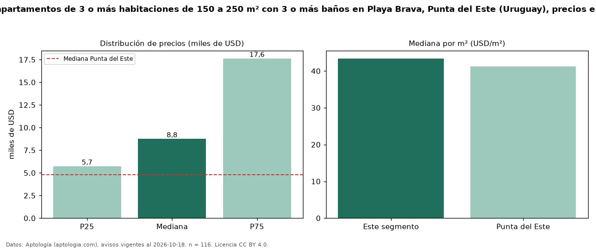

Precio de alquiler de apartamentos de 3 o más habitaciones de 150 a 250 m² con 3 o más baños en Playa Brava, Punta del Este (Uruguay), precios en USD — octubre 2026
En Playa Brava, Punta del Este (Uruguay), la mediana de canon mensual de apartamentos de 3 o más habitaciones de 150 a 250 m² con 3 o más baños es USD 8.750, según 116 avisos vigentes. Eso es 12 % menos que la mediana de los apartamentos de 3 o más habitaciones de 150 a 250 m² en alquiler de Playa Brava (USD 10.000, n = 139); este segmento reúne el 83 % de esos avisos. Por metro cuadrado, la mediana es USD 43,41/m² al mes (n = 116), 14 % por debajo de los apartamentos de 3 o más habitaciones de 150 a 250 m² en alquiler de Playa Brava (USD 50,25/m²). La mitad central de los avisos va de USD 5.738 a USD 17.625 (razón 3,1), una dispersión alta. El área mediana anunciada es 190 m². La cuota de mantenimiento o condominio mediana declarada es USD 1.732 al mes (n = 19), aparte del canon. La mediana de todos los apartamentos en alquiler de Punta del Este es USD 4.800 (+82 % de diferencia). Datos: Aptología (aptologia.com), CC BY 4.0 — https://www.aptologia.com/uy/alquiler/punta-del-este/playa-brava. Archivos: PDF, CSV con las cifras y gráfica PNG.

| Avisos únicos | 116 |
|---|---|
| Percentil 25 | COP 5.737 |
| Mediana | COP 8.750 |
| Percentil 75 | COP 17.625 |
| Mediana por m² | COP 43 |
Fuente: avisos vigentes de portales inmobiliarios recopilados por Aptología, deduplicados (mínimo 30 avisos únicos por celda). Precios pedidos, no cerrados. Fecha: 2026-10-18.